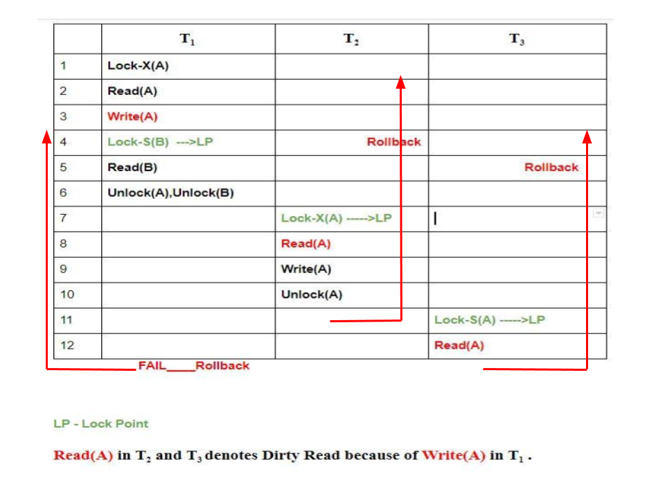

I think you are now familiar with Concurrency Control Protocols. We have discussed briefly about the first type of Concurrency Control Protocol, i.e., Lock based Protocol.
Now, recalling where we last left off, there are two types of Locks available Shared S(a) and Exclusive X(a). Implementing this lock system without any restrictions gives us the Simple Lock based protocol (or Binary Locking), but it has its own disadvantages, they does not guarantee Serializability. Schedules may follow the preceding rules but a non-serializable schedule may result.
To guarantee serializablity, we must follow some additional protocol concerning the positioning of locking and unlocking operations in every transaction. This is where the concept of Two Phase Locking(2-PL) comes in the picture, 2-PL ensures serializablity. Now, let’s dig deep!
Two Phase Locking –
A transaction is said to follow Two Phase Locking protocol if Locking and Unlocking can be done in two phases.
- Growing Phase: New locks on data items may be acquired but none can be released.
- Shrinking Phase: Existing locks may be released but no new locks can be acquired.
Note – If lock conversion is allowed, then upgrading of lock( from S(a) to X(a) ) is allowed in Growing Phase and downgrading of lock (from X(a) to S(a)) must be done in shrinking phase.
Let’s see a transaction implementing 2-PL.
| T1 | T2 | |
|---|---|---|
| 1 | lock-S(A) | |
| 2 | lock-S(A) | |
| 3 | lock-X(B) | |
| 4 | ……. | …… |
| 5 | Unlock(A) | |
| 6 | Lock-X(C) | |
| 7 | Unlock(B) | |
| 8 | Unlock(A) | |
| 9 | Unlock(C) | |
| 10 | ……. | …… |
This is just a skeleton transaction which shows how unlocking and locking works with 2-PL. Note for:
Transaction T1:
- Growing Phase is from steps 1-3.
- Shrinking Phase is from steps 5-7.
- Lock Point at 3
Transaction T2:
- Growing Phase is from steps 2-6.
- Shrinking Phase is from steps 8-9.
- Lock Point at 6
Hey, wait!
What is LOCK POINT ?The Point at which the growing phase ends, i.e., when transaction takes the final lock it needs to carry on its work. Now look at the schedule, you’ll surely understand.
I have said that 2-PL ensures serializablity, but there are still some drawbacks of 2-PL. Let’s glance at the drawbacks:
- Cascading Rollback is possible under 2-PL.
- Deadlocks and Starvation is possible.
Cascading Rollbacks in 2-PL –
Let’s see the following Schedule:

Take a moment to analyze the schedule. Yes, you’re correct, because of Dirty Read in T2 and T3 in lines 8 and 12 respectively, when T1 failed we have to rollback others also. Hence Cascading Rollbacks are possible in 2-PL. I have taken skeleton schedules as examples because it’s easy to understand when it’s kept simple. When explained with real time transaction problems with many variables, it becomes very complex.
Deadlock in 2-PL –
Consider this simple example, it will be easy to understand.Say we have two transactions T1 and T2.
Schedule: Lock-X1(A) Lock-X2(B) Lock-X1(B) Lock-X2(A)
Drawing the precedence graph, you may detect the loop. So Deadlock is also possible in 2-PL.
Two phase locking may also limit the amount of concurrency that occur in a schedule because a Transaction may not be able to release an item after it has used it. This may be because of the protocols and other restrictions we may put on the schedule to ensure serializablity, deadlock freedom and other factors. This is the price we have to pay to ensure serializablity and other factors, hence it can be considered as a bargain between concurrency and maintaining the ACID properties.
The above mentioned type of 2-PL is called Basic 2PL. To sum it up it ensures Conflict Serializability but does not prevent Cascading Rollback and Deadlock. Further we will study three other types of 2PL, Strict 2PL, Conservative 2PL and Rigorous 2PL.
GATE related questions: